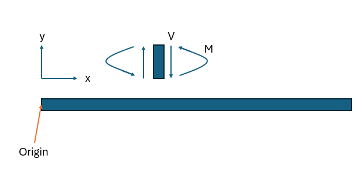
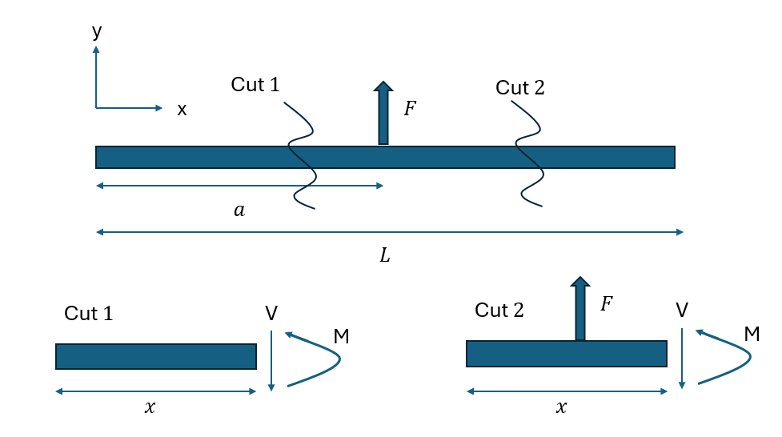
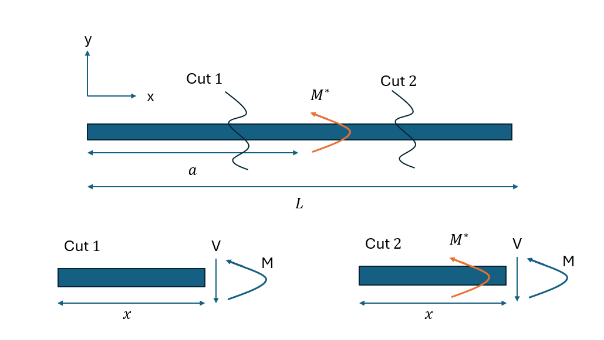
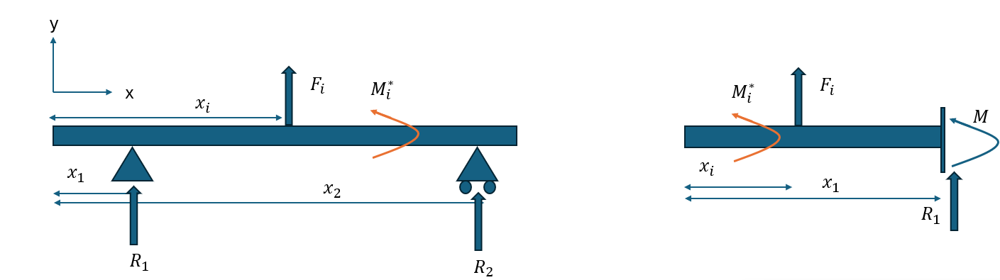

Introduction
The purpose of this section is to provide users with a solid grounding in the theory. This also serves as documentation for the purposes of developing the solver. The sections are organised as follows:
- Assumptions
- Singularity Equations
- Maxwell's Equations
- Determinate Beams
- Indeterminate Beams
Assumptions
Engineer's Beam Theory is based on the following assumptions:
- The beam is initially straight and has a constant cross-section
- Deformations are small compared to the beam length
- Material is isotropic and obeys Hooke's Law
- Shear forces are transmitted through the beam
- Normal stresses are negligible
- Transverse sections remain plane after deformation
- Beams are slender
The beam convention to be used is seen as follows:

Note that the internal forces follow the beam convention, while the external forces, such as reaction loads and applied loads, are taken as positive upwards for forces and anticlockwise for moments.
Singularity Equations
Singularity equations take the form $f(x) = k <x-a>^n$. This function is defined as:
$$
f(x) = k <x-a>^n =
\begin{cases}
0 & \text{if } x < a \\
k (x-a) ^ n & \text{if } x \geq a \\
\end{cases}
$$
Note that this is only valid for $a>0$, which can be ensured by always taking the left-most point as reference. This is an extremely useful property, as the effect on bending moment due to point loads, point moments, constant distributed loads and triangular loads can all be reduced down a single function, rather than a complicated set of inter-related piecewise functions. Later on this will simplify the process of obtaining the deflection from the bending moment, as continuity between piecewise functions are naturally imposed in singularity functions. Singularity equations can also be differentiated and integrated as follows:
$$
\frac{d}{dx} k <x-a>^n = kn <x-a>^{n-1}
$$
$$
\int k <x-a>^n \,dx = \frac{k}{n+1} <x-a>^{n+1} + c
$$
As previously stated, many standard forces effect on bending moment can be represented as a singularity function. These expressions will be very useful later on. An arbitrary point load on a beam can be described by two characteristics: the distance from the origin and the force vector (This gives sufficient information for force and moment balances). Now, consider a point load $F$ at distance $a$ from the origin, as seen in the diagram below:

Making a cut at point 1 yields $M(x) = 0$ for $x < a$, where $M(x)$ is bending moment at some point along the beam. Making a cut at point 2 yields $M(x) = -F(x-a)$. This can be easily represented by a singularity function:
$$
M_{point,load}(x) = -F <x-a> \\
$$
This is a powerful result, as the effect of support reaction forces can be modelled using this result. A similar result can be obtained for a point moment, such as that introduced by a fixed end support. Imagine a point moment of force $M^*$ in the anticlockwise direction and distance $a$ from the origin, as seen in the diagram below:

Using cut 1, it is easily deduced that $M(x) = 0$ for $x < a$. At cut 2, $M(x) = -M^*$ for $x \geq a$. This can be represented by the singularity function:
$$
M_{point,moment}(x) = - M^* <x-a>^0
$$
Now you may be wondering what's the point? Behind the scenes of the beam visualisation, the program exploits these singularity functions to rapidly compute the bending moment distribution across the entire graph by decomposing the beam into into individual supports and forces before utilising linear superposition to sum the effects of each individual force. From a student's perspective, this method is likely to be easier to implement and les error-prone compared to utilising piece-wise functions, especially for more complex beams.
Maxwell's Equations
Maxwell's equations is a simple way to determine whether the beam is a mechanism, determinate or indeterminate. It is a powerful tool, but does not necessarily capture all edge cases. It is noted that a roller support constrains 1 degree of freedom, a pin support constrains 2 degrees of freedom and a fixed end support constrains 3 degrees of freedom. Each constraint introduces an additional known quantity, allowing us to construct an additional equation to solve. In beams, moment equilibrium and force equilibrium each provide an equation, so we have a system of three equations. If we have the same number of constraints as equations, then the system is solvable without additional compatibility equations, or in other words determinate. If we have less constriants than equations, then the system is a meachanism. If we have more constraints than equations, then the system is indeterminate.
This is a simple tool that is sufficient in most cases, but fails in some special cases. For example, consider a beam with three roller supports. Each roller support introduces one constraint, giving three constraints. This suggests that it is a determinate beam, but obviously it is a mechanism as the entire system can move without deformation. This is a special case that Maxwell's equations fail to capture. In general, Maxwell's equations are a good tool to determine whether a beam is determinate or indeterminate, but it is not a foolproof method. Another note is that it is often convenient to assume that any horizontal reaction forces are 0, which is a valid assumption for linear beam theory which assumes small deflections. As the beam rotates, the vertical component of the deflection is $y\cos{\theta} \approx \theta$ and the horizontal component is $y\sin{\theta} \approx 0$. This simplifies the problem from a system of three equations to a system of two equations, which is easier to solve, especially for computing reaction forces in determinate beams.
Determinate Beams
There are only two configurations of determinate beams: pin-roller and cantilever. A pin-roller diagram and cantilever diagram can be found below:

For a pin-roller, the force and moment equilibrium (with origin as datum) can be described as follows:
$$
R_1 + R_2 = -\Sigma F_i \\
R_1 x_1 + R_2 x_2 = -\Sigma F_i x_i - \Sigma M^*_i
$$
This can be easily solved for $R_1$ and $R_2$. The solution takes the form:
$$
R_1 = \frac{x_2 \Sigma F_i - \Sigma F_i x_i - \Sigma M^*_i}{x_1 - x_2} \\
R_2 = - R_1 - \Sigma F_i
$$
Meanwhile, for the cantilever beam, the force and moment equilibrium can be described as follows:
$$
R_1 = -\Sigma F_i \\
R_1 x_1 + M = -\Sigma F_i x_i - \Sigma M^*_i
$$
Now that reaction forces and moments are known, the bending moments along the beam can be computed via the method described in the singularity function section. Namely, for the pin-roller beam, each support and force will generate a bending moment contirbution, which can then be linearlly summed. This gives the bending moment distribution:
$$
M(x) = -R_1 <x - x_1> - R_2 <x - x_2> - \Sigma F_i <x - x_i> - \Sigma M^*_i <x - x_i>^0
$$
Similarly for the cantilever beam, the bending moment distribution can be computed as follows:
$$
M(x) = -R_1 <x - x_1> - M_1 <x - x_1>^0 - \Sigma F_i <x - x_i> - \Sigma M^*_i <x - x_i>^0
$$
Once bending moments are calculated, the deflection can be integrated from bending moment deflection. The relation bewtween the two is:
$$
EI \frac{d^2y}{dx^2} = - M(x)
$$
By assuming homogenouse and constant cross-section, this can be double integrated to obtain the deflection:
$$
y' = \frac{1}{EI}\int - M(x) \,dx + c_1 \\
y = \frac{1}{EI}\int \int - M(x) \,dx \,dx + c_1 x + c_2
$$
Boundary conditions can now be imposed. For a pin-roller, the boundary conditions are $y(x_1) = 0$ and $y(x_2) = 0$. For a cantilever, the boundary conditions are $y(x_1) = 0$ and $y'(x_1) = 0$. These can be used to solve for the constants $c_1$ and $c_2$. The deflection, slope and bending moment is now known. (If shear force is known, can differentiate bending moment, or using the method in the singularity function section).
Indeterminate Beams
For indeterminate beams, it is now not possible to find the reaction forces and moments using only force and moment equilibrium. Extra unkowns are introduced, which requires extra equations in order to obtain a unique solution. The extra equations are provided via compatibility equations. From a practical point of view, the idea would be to identify a determinate "sub-beam" within the structure, and cast all other supports as virtual forces. An example is given below:
[Insert example here. Say a cantilever beam with some forces and 2 extra supports. Then another diagram showing decomposition]
The beam can be broken down into "sub-beams" and each one solved for deflection. As linear beam theory is used, the results can then be linearly superposed. For the above example, the beam can be broken down into one cantilever beam with forces, and two beams with unit virtual forces and moments replacing the beam reaction forces and moments. The determinate beam is solved as per usual. The virtual beams will be solved with a variation of the method described in the determinate section.
Compatibility equations were previously mentioned as the solution, but has yet to be implemented until now. For the above example, the simple support is replaced by a unit virtual force. The compatibility condition is that at the simple support, the deflection must be 0. The question to be solved now is what magnitude of virtual force (or in other words what is the reaction force at this support) that will allow the compatibility condition to be satisfied. (Note, if it is a fixed support, then compatibility condition is deflection and slope must be 0. The latter can be considered via a unit virtual force and the latter by a unit virtual moment). By utilising virtual work principle, it can be shown that:
$$
P^* \Delta = \frac{1}{EI} \int M^* M \,dx
$$
-- This explanation is not quite correct --
Note that this assumes a homogeneous beam. $P^*$ is the actual load, $\Delta$ is the deflection in the direction of the virtual load, $M$ is the bending moment distribution of the determinate sub-beam and $M^*$ is the bending moment distribution of the virtual beam. This equation can be solved for $P^*$, which is the reaction force at the support. This can be repeated for all supports, and the system can be solved. The bending moment equation can therefore be formulated as:
$$
M_{intdeterminate}(x) = M_{determinate}(x) + \Sigma P^*_i M^*_{virtual,i}(x)
$$
Deflection can then be found by integrating the bending moment equation, using the boundary conditions in the determinate "sub-beam" as these have yet to be imposed (previously we have been implementing the boundary conditions due to extra supports).